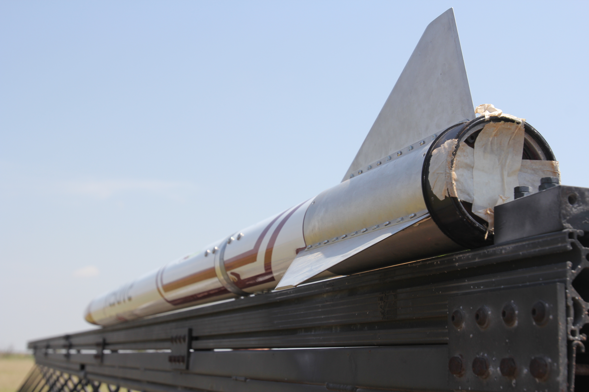
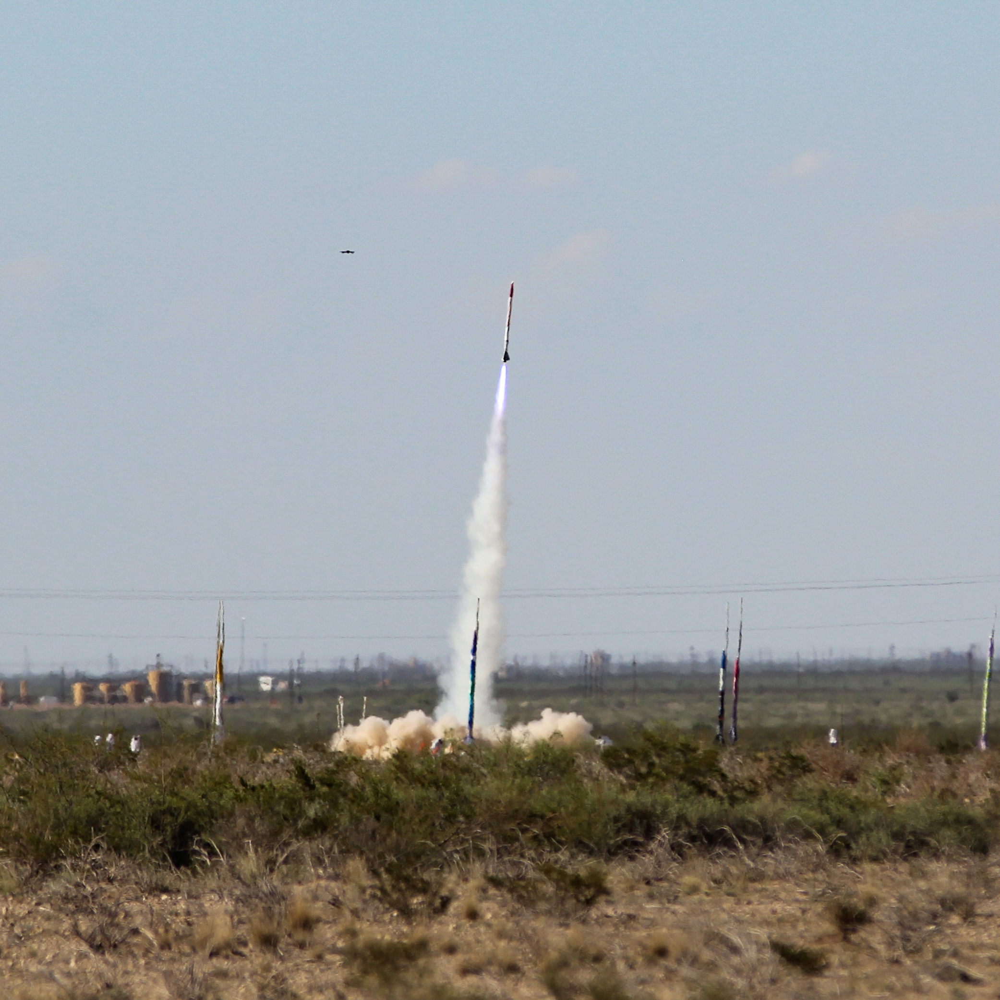
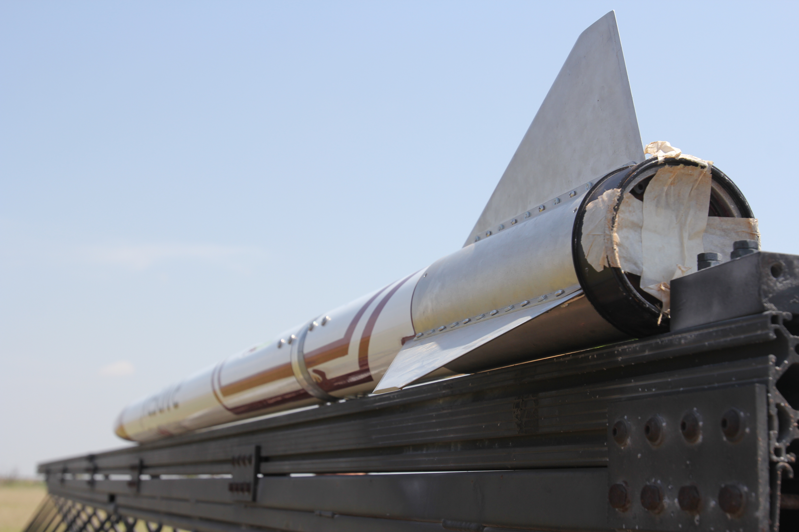
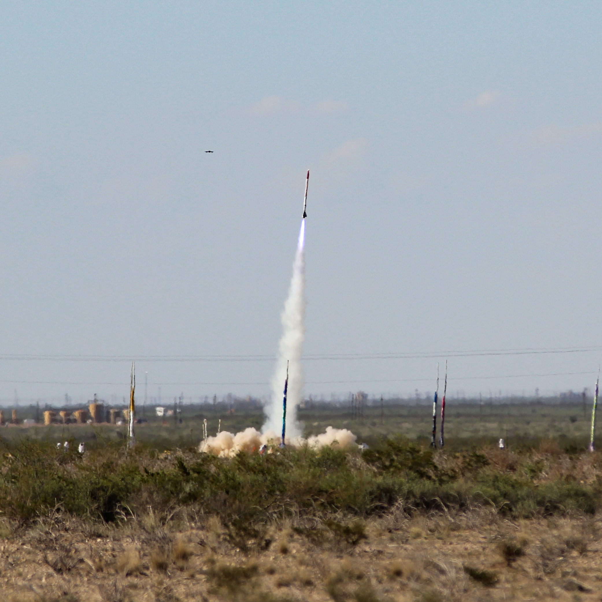
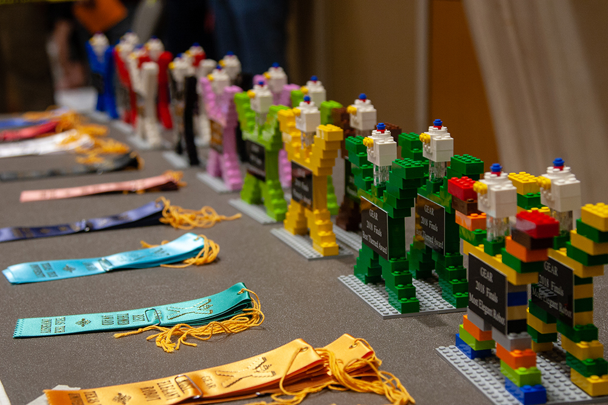
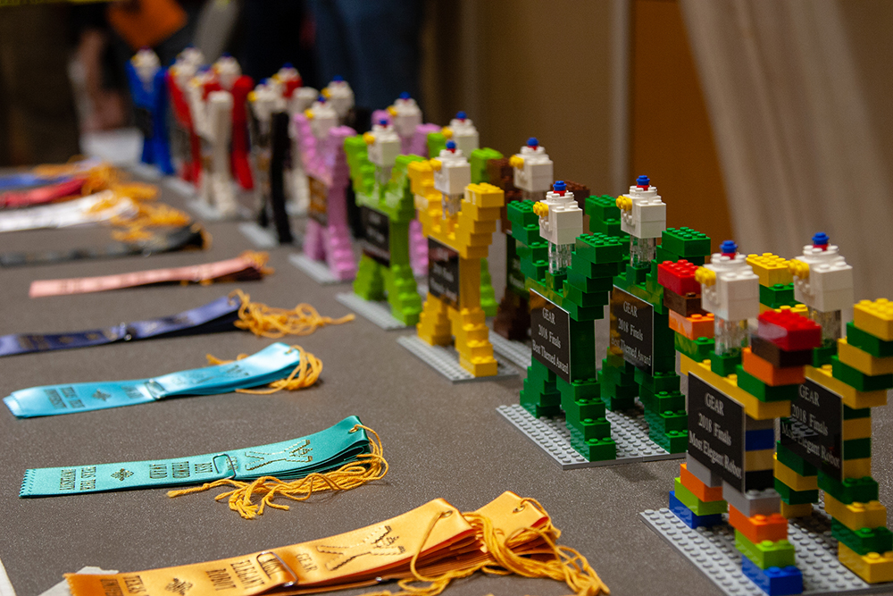
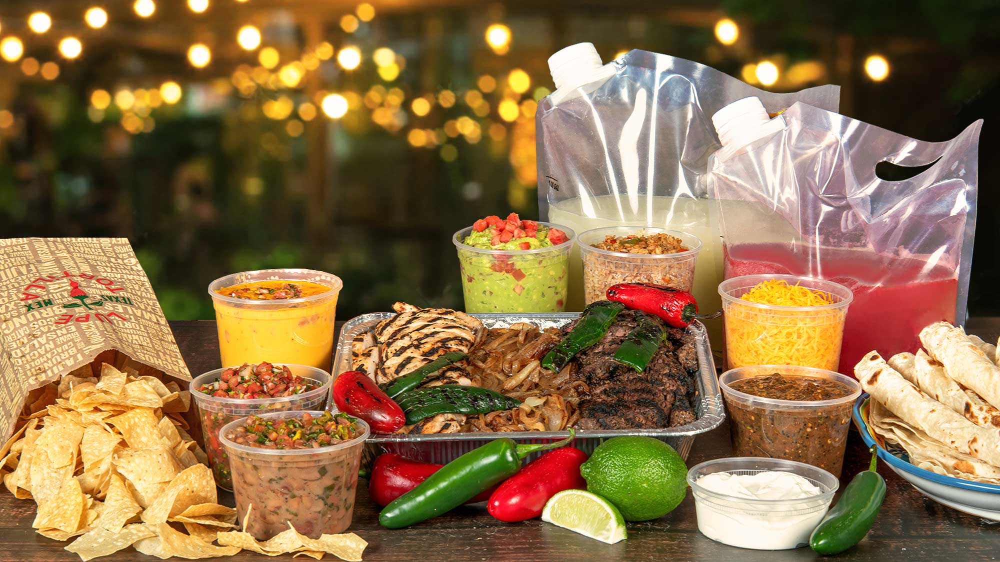
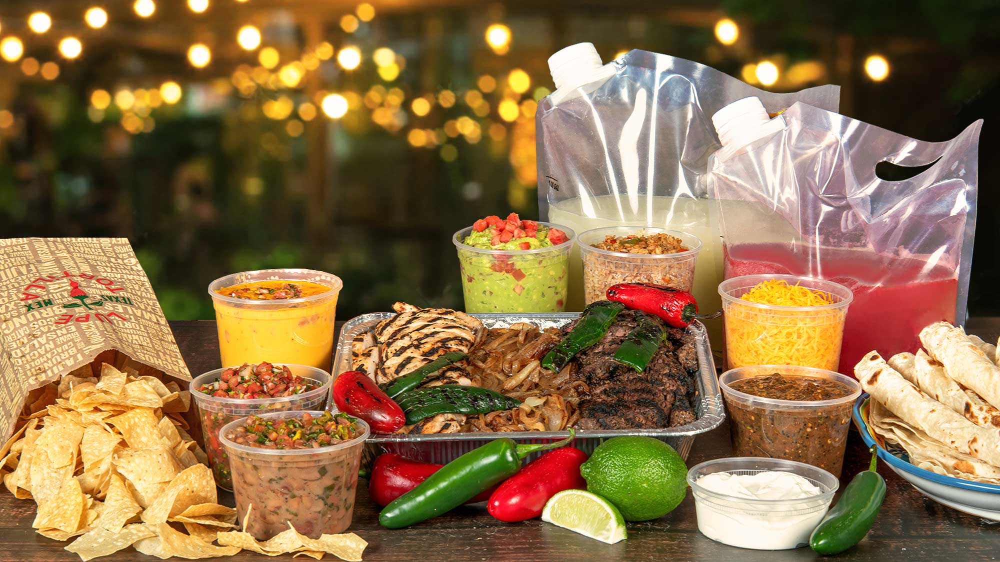

Raider Aerospace Society • Mar 2025 – Present
Avionics Team Lead
### Avionics Development and Acting Lead
#### August 2024 - June 2025 | IREC 2025
I joined the Space Raiders avionics subteam in August 2024 and began contributing to SRAD avionics development under the existing team leadership. My initial focus was on avionics for the airbrakes control system, which evolved into the primary SRAD avionics effort as project scope expanded. As team availability shifted during the Spring semester, I assumed increasing responsibility for avionics integration, testing, and launch operations.
During this period, I supported multiple flight campaigns and was responsible for both custom avionics systems and integration with commercial recovery electronics. Following a test flight anomaly, I contributed to a rapid rebuild and iteration cycle that culminated in the first successful launch of RaiderX at the May Shootout. Leading into IREC 2025, I was elected Avionics Team Lead for the upcoming season and assumed acting lead responsibilities at competition due to unforeseen circumstances.
Throughout the IREC 2025 campaign, I balanced development progress with flight safety considerations, including making risk-based decisions regarding system readiness and flight inclusion.
**Key contributions during the IREC 2025 cycle included:**
- Developed and integrated SRAD avionics hardware and firmware for aibrakes testing
- Supported launch operations and avionics troubleshooting in field environments
- Coordinated avionics integration with recovery and vehicle subsystems
- Led post-flight analysis and rebuild efforts following flight anomalies
- Represented the avionics team during competition judging, safety reviews, and pad operations
- Made safety-driven decisions regarding flight readiness and system maturity
### Avionics Team Lead
#### June 2025 - Present | IREC 2026
Following IREC 2025, I formally assumed the role of Avionics Team Lead for the IREC 2026 season. In this role, I am responsible for technical direction, team coordination, and long-term planning for avionics development across multiple subsystems. My focus has been on establishing a strong technical foundation, onboarding new members, and driving the program toward review and flight readiness milestones.
Over the summer, I led general planning efforts to define system architecture, development priorities, and team structure in preparation for the Fall 2025 semester. During the first half of the semester, I focused on onboarding and technical ramp-up for new members, emphasizing fundamentals, workflows, and subsystem context. This work culminated in the Preliminary Design Review held prior to Thanksgiving, where the avionics team presented designs to alumni, faculty advisors, and external reviewers.
**Current responsibilities and milestones include:**
- Leading a 15-person interdisciplinary avionics team across hardware, firmware, and integration efforts
- Organizing and delivering technical workshops on Git, electronics fundamentals, soldering, and PCB design
- Defining avionics system architecture and development roadmaps for IREC 2026
- Guiding subsystem design through structured reviews and documentation
- Preparing avionics designs and justifications for formal design reviews and future flight campaigns
 

TTU Volunteer • Spring 2025
GEAR RoboRanch Table Referee
**Texas Tech University | STEM Outreach and Volunteering**
Volunteered as a table referee for the GEAR Robotics RoboRanch competition, a LEGO Technic based robotics event for upper elementary and middle school students hosted by Texas Tech University. The role required independent judgment, clear communication, and consistency in a fast paced competition environment focused on both fairness and education.
**Responsibilities and contributions included:**
- Served as the primary authority for scoring, penalties, and rule interpretation across practice, qualifying, and championship rounds
- Applied rules consistently while rotating between tables to ensure fairness across teams
- Communicated penalties and corrections clearly and constructively to support learning and improvement
- Guided students through competition procedures while maintaining a positive and encouraging atmosphere
- Worked under faculty supervision to support a university led STEM outreach program for local schools
 

Hospitality • Mar 2023 – Present
Server, Lupe Tortilla
**Allen, TX | Customer Operations and Service**
Worked in a high-volume restaurant environment supporting take-out and large catering orders, requiring accuracy, time management, and clear communication with both customers and kitchen staff. Regularly handled high-value orders for events where reliability and coordination were critical.
**Responsibilities and contributions included:**
- Managed take-out and catering orders ranging from small customer pickups to large event orders exceeding $1,500
- Coordinated closely with kitchen staff to ensure order accuracy, timing, and presentation under peak demand
- Communicated order details, changes, and expectations clearly to customers in time-sensitive situations
- Supported event catering logistics for weddings, graduation parties, and local functions
- Maintained composure and service quality during high-pressure periods and staffing constraints